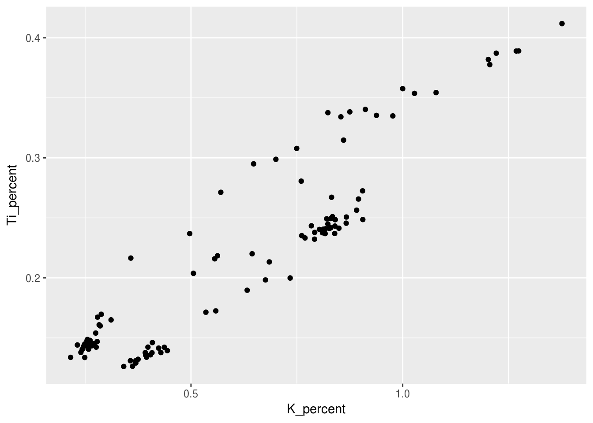
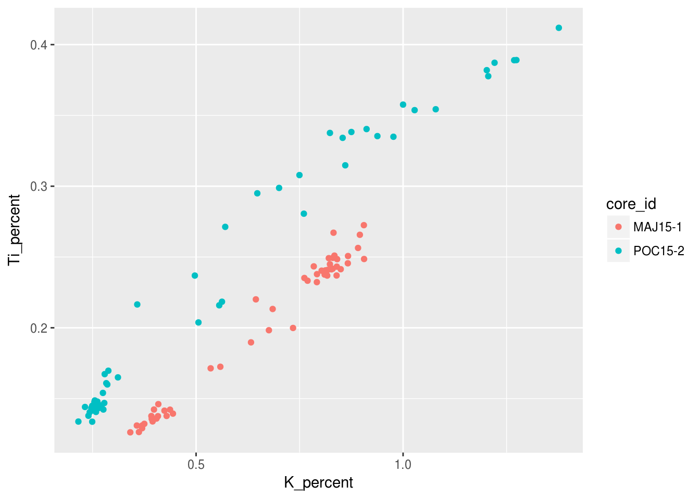
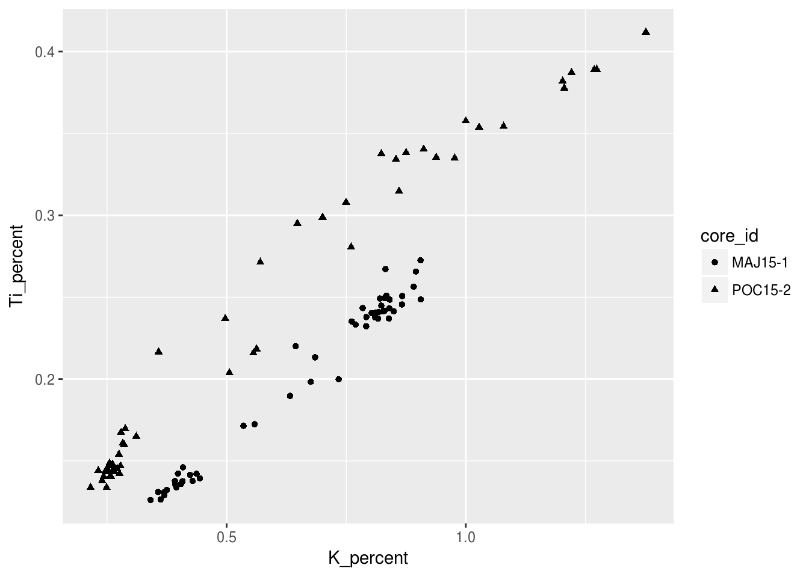
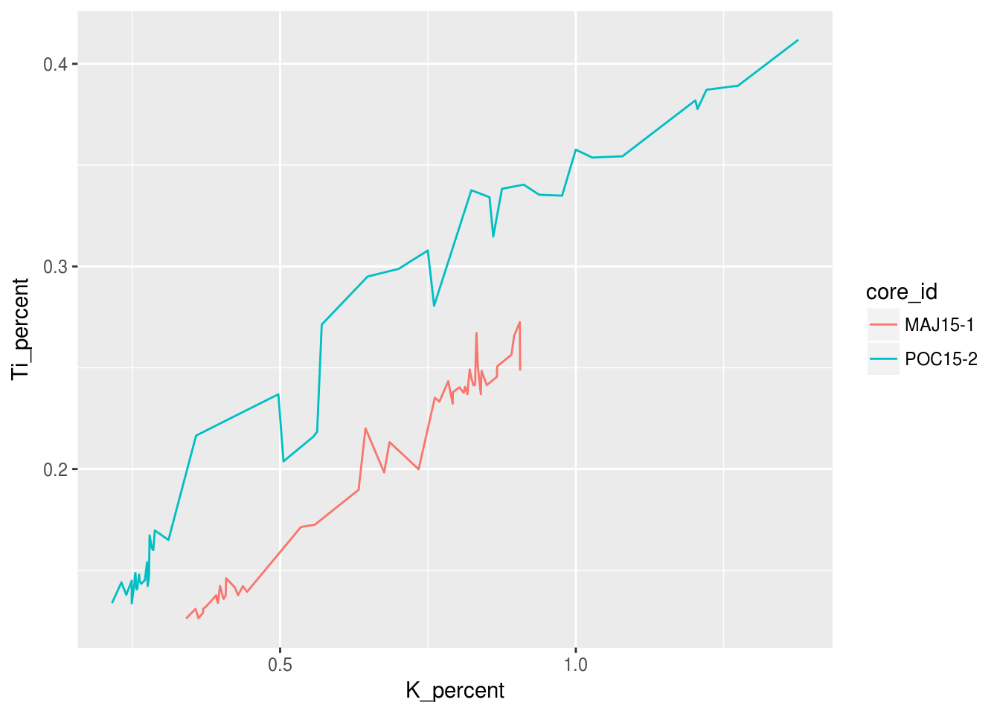
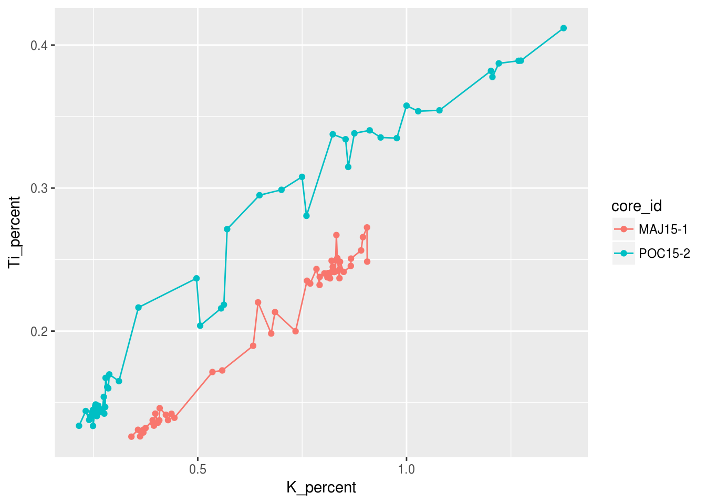
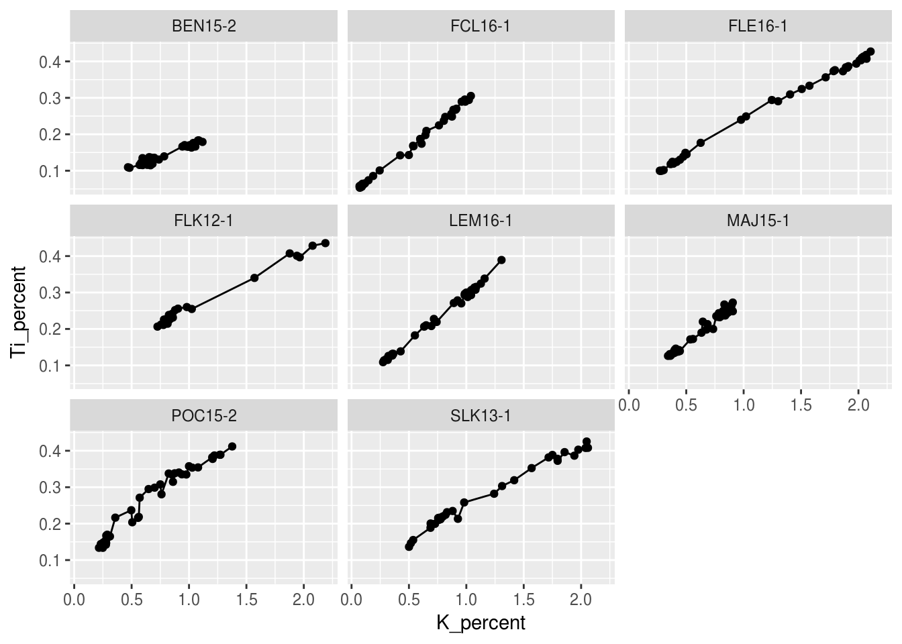
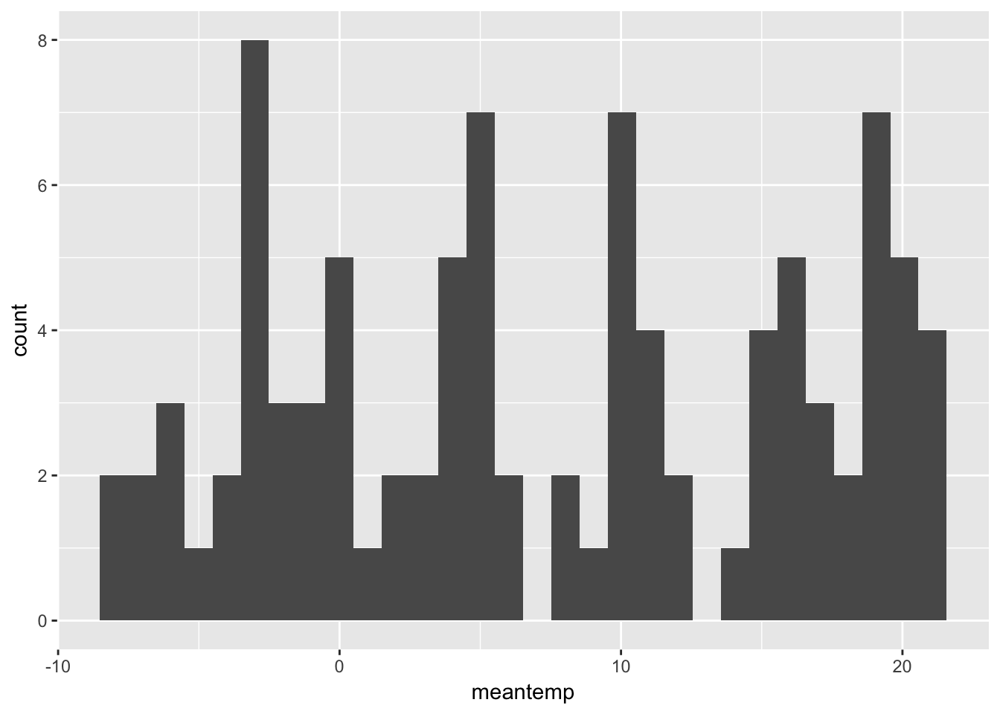
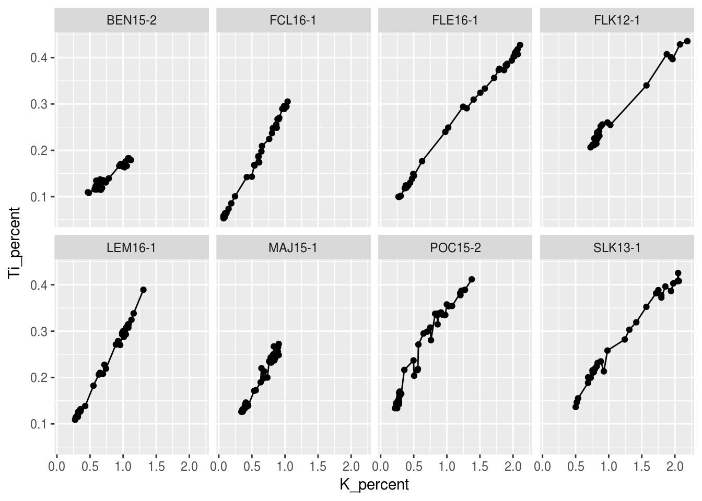
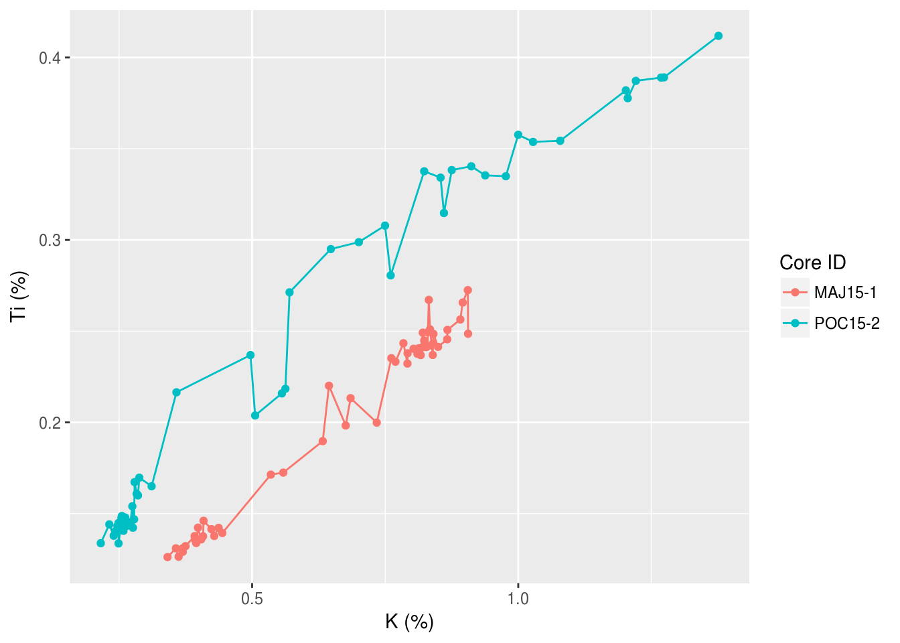

Tutorial 3 Creating Visualizations using ggplot
This tutorial will introduce you to using ggplot2 in order to visualize your data. R has many options for creating graphs and figures but, ggplot2 is versitile, firendly to learn, and quite elegant. Using ggplot2 you will be able to quickly learn the basics of it’s functionallity and apply those skills to more advanced figures as explained in Chapter 5.
For more information, see the data visualization chapter in R for Data Science.
3.1 Prerequisites
The prerequisite for this tutorial is the tidyverse package. If this package isn’t installed, you’ll have to install it using install.packages().
Load the packages when you’re done! If there are errors, you may have not installed the above packages correctly!
Finally, you will need to load the example data. For now, copy and paste the following code to load the Halifax geochemistry dataset (we will learn how to read various types of files into R in the preparing and loading data tutorial).
halifax_geochem <- read_csv(
"http://paleolimbot.github.io/r4paleolim/data/halifax_geochem.csv",
col_types = cols(.default = col_guess())
)It’s worth mentioning a little bit about what this data frame contains, since we’ll be working with it for the rest of this tutorial. The data contains several bulk geochemical parameters from a recent study of Halifax drinking water reservoirs (Dunnington et al. 2018), including Pockwock Lake, Lake Major, Bennery Lake, Lake Fletcher, Lake Lemont, First Chain Lake, First Lake, and Second Lake. (Later, we will take a look at the core locations as well as the geochemical data).
3.2 Using ggplot
The Grammar of Graphics (the “gg” in “ggplot”) is a way of describing a graphic that is derived from data, which in R is done using the ggplot() function and its many friends. Unlike other plotting functions, ggplot() builds graphics from the data up (rather than starting with a template of a graphic and working backward). Before we can use ggplot functionality we need to use the skills learned in Chapter 2 where we filtered our data. See if you can use filter() on the halifax_geochem data to create the pockwock_data and pockwock_major_data variable (HINT: check out the Filtering Rows secontion in Chapter 2).
pockwock_data <- filter(halifax_geochem, core_id == "POC15-2")
pockwock_major_data <- filter(halifax_geochem, core_id %in% c("POC15-2", "MAJ15-1"))Now we can start with the ggplot example using the pockwock_major_data:
## Warning: Removed 1 rows containing missing values (geom_point).
- What the structure of the
ggplot()call is
Steps for plotting:
- Envision how you want your plot to look (draw it on paper if you have to!)
- Setup the data (
select(),filter()) - Setup your mapping (
aes()) - Choose your geoms (
geom_*()) - Make it look pretty
3.3 Aesthetics
Categorical/Grouping Variables get mapped to X, Y, Colour, Shape, Linetype. Continuous Variables get mapped to X, Y, Colour, Size. For example, we can choose to colour the previous figure in order to visually see the difference between core samples by simply adding a colour = core_id argument to the aesthetic:
ggplot(data = pockwock_major_data, mapping = aes(x = K_percent, y = Ti_percent, colour = core_id)) +
geom_point()## Warning: Removed 1 rows containing missing values (geom_point).
Notice how there is a legend automatically generated for us? We will look into changeing the labelling of that later in this tutorial! We can also choose to categorize our data with shapes other than the points seen previously, since not all figures may be welcome if they have colour!
ggplot(data = pockwock_major_data, mapping = aes(x = K_percent, y = Ti_percent, shape = core_id)) +
geom_point()## Warning: Removed 1 rows containing missing values (geom_point).
Now we can try to provide some information on depth by making each symbols size relative to its depth value. For this example I only want to use the pockwock_data we previously created in Chapter 2:
ggplot(data = pockwock_data, mapping = aes(x = K_percent, y = Ti_percent, size = depth_cm)) +
geom_point()## Warning: Removed 1 rows containing missing values (geom_point).
3.4 Geometries
We can easily change the type of geometry being used in the ggplot we have been working on. Here is an example of the same figure as above only with geom_line instead of geom_point:
ggplot(data = pockwock_major_data, mapping = aes(x = K_percent, y = Ti_percent, colour = core_id)) +
geom_line()## Warning: Removed 1 rows containing missing values (geom_path).
Or we could choose multiple geometries!
ggplot(data = pockwock_major_data, mapping = aes(x = K_percent, y = Ti_percent, colour = core_id)) +
geom_line() +
geom_point()## Warning: Removed 1 rows containing missing values (geom_path).## Warning: Removed 1 rows containing missing values (geom_point).
3.5 Facets
An alternative to altering aesthetics of a plot to provide the end-user with visual seperation is to split your plot into facets, subplots that each display one subset of the data. We can do this simply by using the facet_wrap() argument. For this example we can use the origional halifax_geochem table and create one facet for each core!
ggplot(data = halifax_geochem, mapping = aes(x = K_percent, y = Ti_percent)) +
geom_line() +
geom_point() +
facet_wrap(~core_id)## Warning: Removed 1 rows containing missing values (geom_path).## Warning: Removed 7 rows containing missing values (geom_point).
This is great, however we may wnat to change the layout of these facet plots. We can do this easily by specifying the number of rows nrow= or the number of columns ncol= within facet_wrap.
ggplot(data = halifax_geochem, mapping = aes(x = K_percent, y = Ti_percent)) +
geom_line() +
geom_point() +
facet_wrap(~core_id, ncol = 4)## Warning: Removed 1 rows containing missing values (geom_path).## Warning: Removed 7 rows containing missing values (geom_point).
3.6 Make it look pretty
3.6.1 Labels
Rather than using the column headings from your data table which often are (and should be) rittled with short form versions of what it represents as well as underscores for any division of words. The labs() function cab be used to give your figure a more desirable presentation to the end users. Here I have changed the x and y values from K_percent and Ti_percent to K (%) and Ti (%) respectively. While we’re at it, lets change the legend title text just for fun!
ggplot(data = pockwock_major_data, mapping = aes(x = K_percent, y = Ti_percent, colour = core_id)) +
geom_line() +
geom_point()## Warning: Removed 1 rows containing missing values (geom_path).## Warning: Removed 1 rows containing missing values (geom_point).ggplot(data = pockwock_major_data, mapping = aes(x = K_percent, y = Ti_percent, colour = core_id)) +
geom_line() +
geom_point() +
labs(x="K (%)",y="Ti (%)", colour = "Core ID")## Warning: Removed 1 rows containing missing values (geom_path).
## Warning: Removed 1 rows containing missing values (geom_point).
3.6.2 Themes
3.6.3 Scales
We can also change the scales of our axis using scale_*_discrete() or scale_*_continuous(). Common discrete scale parameters: name, breaks, labels, na.value, limits and guide.
3.7 Summary
Tutorial summary
For more information, see the data visualization chapter in R for Data Science.
References
Dunnington, Dewey W., I. S. Spooner, Wendy H. Krkošek, Graham A. Gagnon, R. Jack Cornett, Chris E. White, Benjamin Misiuk, and Drake Tymstra. 2018. “Anthropogenic Activity in the Halifax Region, Nova Scotia, Canada, as Recorded by Bulk Geochemistry of Lake Sediments.” https://doi.org/10.1080/10402381.2018.1461715.